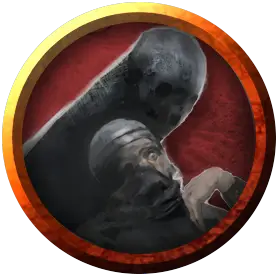

Тень убийца
Shadow Assassin
Средняя Нежить, хаотично-злая

Класс Доспеха 14
Хиты 78 (12к8 + 24)
Скорость 40 футов
| мод | спас | ||
|---|---|---|---|
| СИЛ | 6 | −2 | −2 |
| ЛОВ | 19 | +4 | +8 |
| ТЕЛ | 14 | +2 | +2 |
| мод | спас | ||
|---|---|---|---|
| ИНТ | 13 | +1 | +5 |
| МДР | 12 | +1 | +1 |
| ХАР | 14 | +2 | +2 |
Навыки Восприятие +9, Скрытность +12
Уязвимость к урону излучение
Сопротивление урону звук, кислота, огонь, холод, электричество; дробящий, колющий, рубящий от немагических атак
Иммунитет к урону некротическая энергия, яд
Иммунитет к состояниям окаменение, опутанность, отравление, сбивание с ног, захват, паралич, испуг, истощение
Чувства тёмное зрение 60 футов, пассивное Восприятие 19
Опасность 9 (5000 опыта)
Бонус мастерства +4
Особенности
Языки. Понимает языки, которые знал при жизни, но не может говорить.
Аморфный. . Убийца может перемещаться сквозь пространство шириной в 1 дюйм без протискивания.
Скрытность в тени. . Находясь в области тусклого света или тьмы, убийца может бонусным действием выполнить действие Засада.
Слабость на солнечном свете. . Находясь на солнечном свете, убийца совершает с помехой броски атаки, проверки характеристик и спасброски.
Действия
Мультиатака. Убийца совершает две атаки теневым клинком.
Теневой клинок. Рукопашная атака оружием: +8 к попаданию, досягаемость 5 фт., одна цель. Попадание: 7 (1к6 + 4) колющий урон плюс 10 (3к6) урона некротической энергией. Если цель не обладает иммунитетом к урону некротической энергией, её показатель Силы уменьшается на 1к4 каждый раз при попадании этой атакой. Цель умирает, если показатель Силы уменьшается до 0. Уменьшение длится до тех пор, пока цель не закончит короткий или продолжительный отдых.
Если от этой атаки умирает гуманоид с незлым мировоззрением, через 1к4 часа из его трупа появится новая тень [shadow].
Описание
Тень убийца выглядит как тень-нежить (представлена в Бестиарии), с сотворенными из тени короткими мечами. Она существует только для убийства живых существ.
Природа нежити. Тени не нужен воздух, еда, питьё и сон.